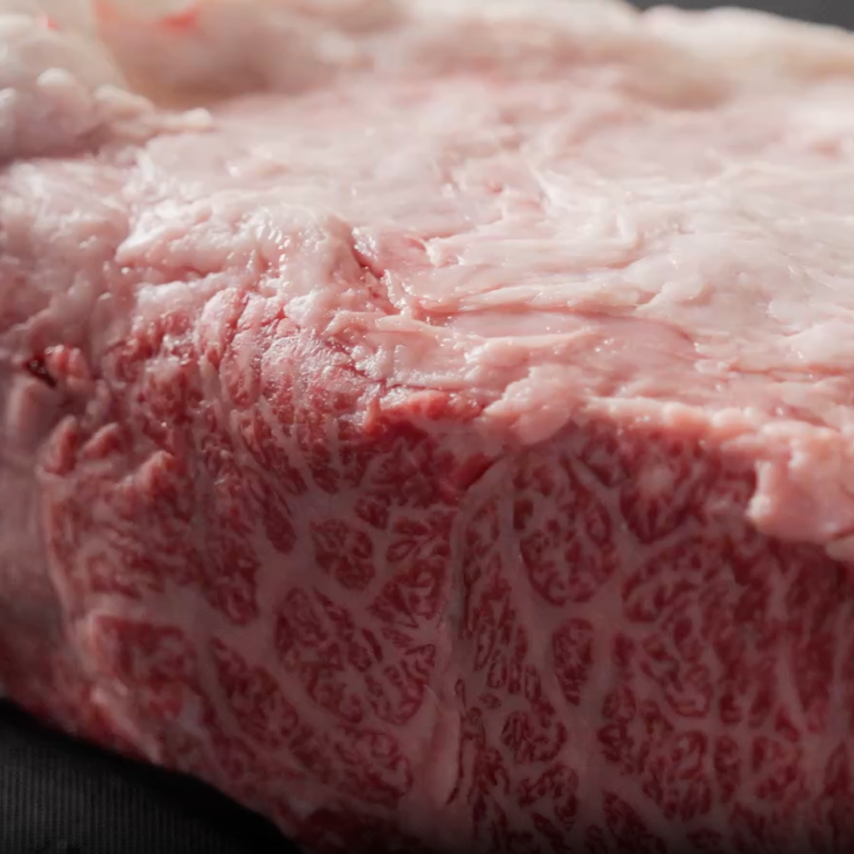
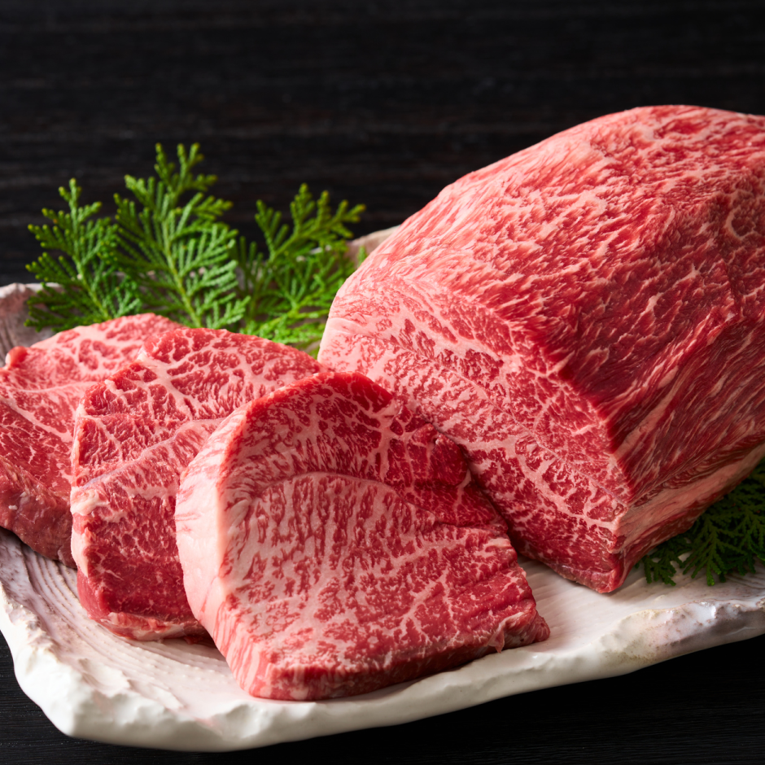
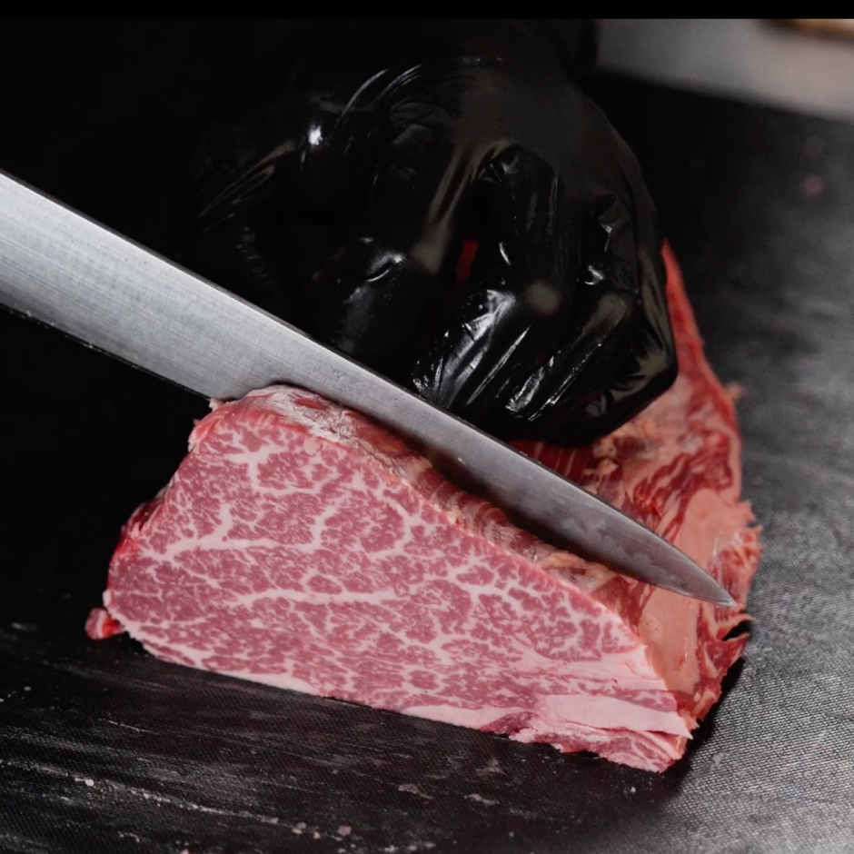
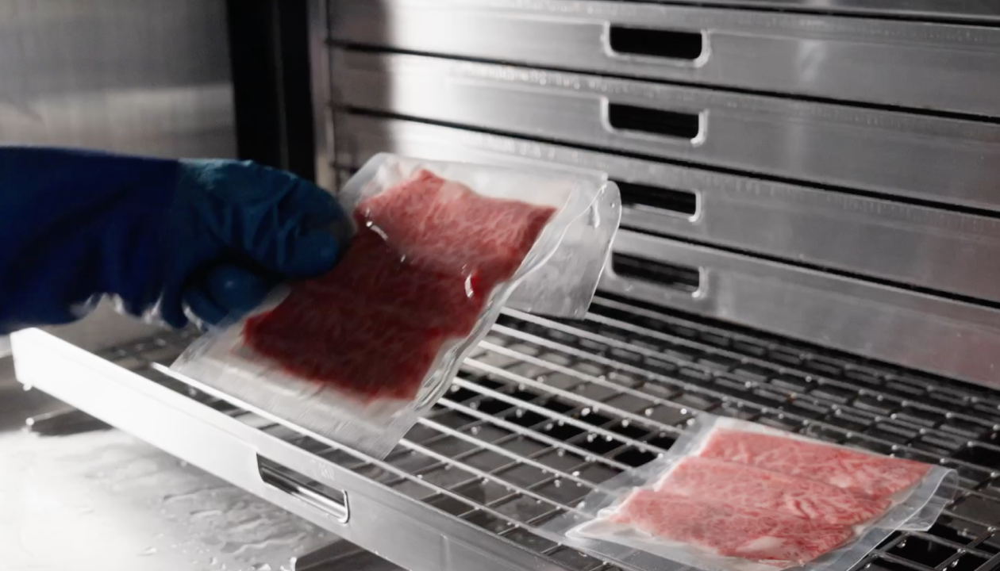
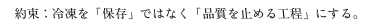
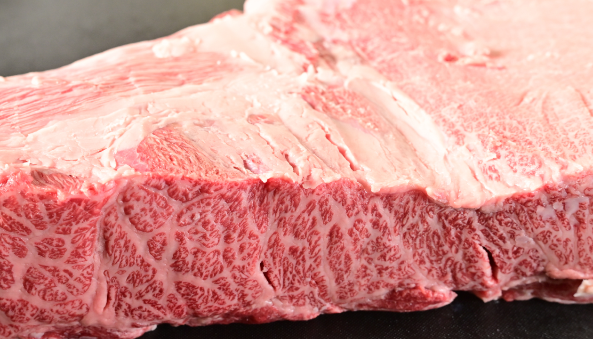
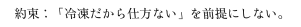
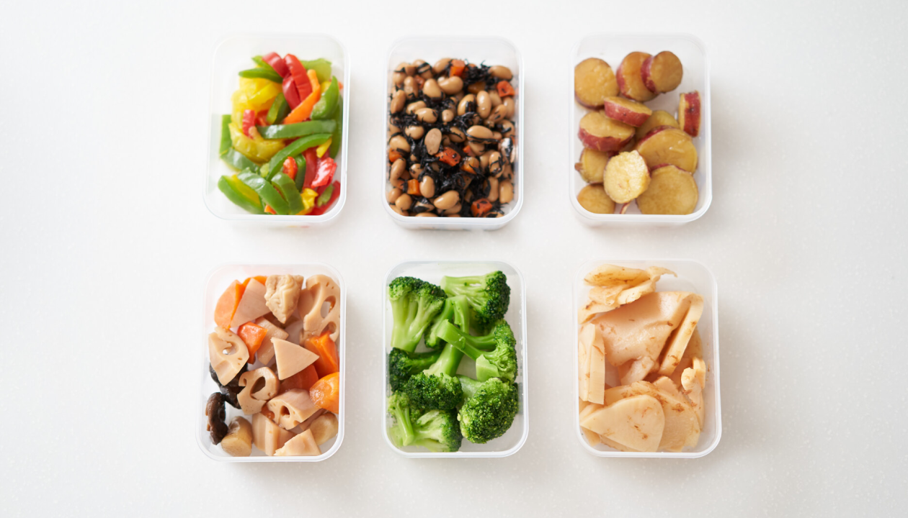
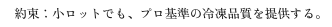

ゼロカラ急速冷凍とは？
“おいしさを止める”超高速冷凍
ゼロカラ急速冷凍は、
食材を一気に凍らせることで、
冷凍時に起こりやすい品質変化
（ドリップ・食感・色味）を
抑えることを狙った急速冷凍です。
iiniku翔では、対面販売で感じる満足を
ECでも成立させるために、
冷凍工程を中核に置いています。
-
冷凍で水っぽくなるのは、
旨味が逃げるから。一般的な冷凍は、
ゆっくり凍る過程で食材の細胞に負担がかかりやすく、
解凍時にドリップ（旨味の流出）が出やすくなります。
結果として、食感が変わったり、香りが弱く感じたり、
味が薄く感じたりすることがあります。
「冷凍だから仕方ない」を前提にしないために、
ゼロカラ急速冷凍を採用しています。 -
品質が落ちやすい温度帯を、
短時間で抜ける。食材が最もダメージを受けやすいのは、
完全に凍り切るまでの“途中の温度帯”。
特に -1℃〜-5℃ は品質変化が起きやすいゾーンとされ、
ここを長く通るほど、解凍後のドリップや
食感変化につながりやすくなります。
ゼロカラは、このゾーンを短時間で通過させることで、
切りたて・作りたての状態を
できる限り固定することを目指します。 -
ゼロカラの性能を
引き出すのは工程設計です。急速冷凍は、機械だけで完成しません。
iiniku翔では、仕込みのピーク（最高の状態）を逃さないために、
仕入れ→下処理→カット→真空→急速冷凍までの
流れを崩さず運用します。
ホルモンは、電解水で洗浄後に急速冷凍。
“見えない不安”を減らすため、
工程も公開し、信頼を積み重ねていきます。
Strengths 3つの強み
-
01
とにかく早い冷凍スピード
ゼロカラは、冷凍のスピードそのものが違います。
食材が最もダメージを受けやすい（-1℃〜-5℃）の劣化ゾーンを短時間で通過し、
色・食感・旨味の変化をできる限り抑えます。
iiniku翔では冷凍を、ただの保存ではなく、
仕込みの最高到達点を“止める工程”として扱っています。
その差が、解凍後の満足度につながります。
-
02
解凍しても水っぽくなりにくい
解凍時に出るドリップは、旨味の流出です。
ゼロカラで冷凍した肉はドリップが出にくく、
焼いたとき・切ったとき・食べたときの印象が変わります。
「え？これ冷凍？」と感じる体感を目指して、
凍結だけでなく、仕込み・包装・温度管理まで含めて設計しています。
冷凍の弱点を、工程全体で小さくします。
-
03
肉・魚・惣菜まで幅広く対応（小ロットOK）
精肉、ホルモン、魚、加工品、惣菜まで幅広く対応可能です。
業務用クオリティの急速冷凍を、小ロットから利用できます。
個人の試作、イベントや催事用の事前冷凍、
EC用在庫の計画冷凍、ロス削減や繁忙期対策まで。
“冷凍＝妥協”ではなく、品質を守りながら選択肢を増やす冷凍です。
Comparison
見ればわかる、
一般冷凍との違い。
冷凍の差は、言葉で説明するよりも
“結果”が一番早い。
解凍したときに出るドリップ、
肉の色味、焼いた断面の表情。
その違いは、写真や動画なら一目で伝わります。
iiniku翔では、一般冷凍とゼロカラの違いを、
条件をそろえた比較として順次公開します。
「冷凍だから仕方ない」を前提にせず、
見て納得できる情報としてお届けします。